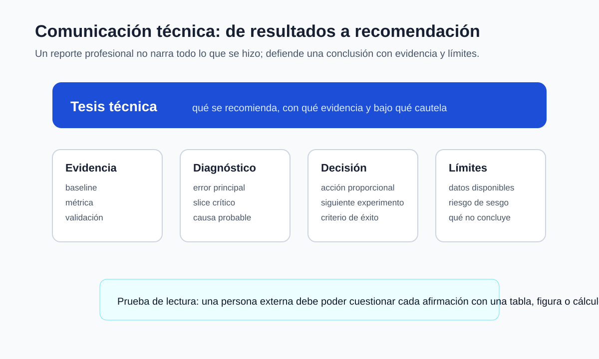

Tesis técnica, tablas y figuras
¿Cómo organiza un reporte una conclusión, una comparación y un límite sin narrar cada intento?
Al salir de esta sesión Alinear cada afirmación del reporte con un resultado, una comparación y un límite.
El manifiesto permite reconstruir resultados. El reporte debe permitir evaluarlos y cuestionar su alcance.
pasaremos de una lista de outputs a una tesis respaldada por tablas y figuras con función explícita.
Cada grupo trae su tabla principal y una figura. Revisaremos si responden la pregunta del proyecto o si solo muestran actividad.
La clínica trabaja sobre artefactos del proyecto; no se usan capturas sin archivo fuente.

La tesis aparece primero, pero cada afirmación fuerte debe apuntar a una tabla, figura, cálculo o archivo.
Otra muestra puede cambiar la cifra y la comparación; el reporte debe conservar esa incertidumbre.
| Parte | Pregunta que responde |
|---|---|
| tesis | ¿qué se concluye y bajo qué cautela? |
| baseline | ¿contra qué referencia mejora? |
| tabla | ¿qué números permiten comparar? |
| figura | ¿qué patrón no cabe en una cifra? |
| límite | ¿qué queda fuera del alcance? |
Comprobación de forma: Una tabla de comparación tiene una fila por candidato o slice y columnas con partición, métrica, media, dispersión y costo cuando corresponda.
¿Cómo cuantificamos una mejora sin exagerarla mediante porcentajes relativos aislados?
\[ \Delta_{abs}=M_1-M_0, \qquad \Delta_{rel}=\frac{M_1-M_0}{|M_0|}. \]
La mejora relativa puede parecer grande cuando el denominador es pequeño. El reporte muestra valor base, valor nuevo y diferencia absoluta.
Una comparación requiere la misma partición, métrica y unidad. Si cambian, \(\Delta\) mezcla efectos y deja de atribuirse al modelo.
Una recomendación se restringe a la población y periodo medidos; si el test es pequeño, se reportan tamaño y conteos además del promedio.
1 · voto individual 2 · discusión en parejas 3 · segundo voto
La diferencia absoluta es 0.02 y la mejora relativa es 0.02/0.10=20 %. Mostrar ambos valores evita que el porcentaje relativo exagere el cambio.
Una figura de curva de aprendizaje apoya un diagnóstico; una matriz de confusión apoya la distribución de errores; ninguna reemplaza el texto que fija la lectura.
Un reporte puede incluir resultados secundarios, pero la jerarquía visual debe mostrar cuál sostiene la conclusión principal.
Al repetir el experimento: Una afirmación técnica muestra denominador, baseline y límite junto al resultado.
| Elemento | Versión débil | Versión verificable |
|---|---|---|
| tabla | valores sin split | modelo, split, métrica, n |
| figura | decoración | pregunta y lectura |
| conclusión | adjetivo | comparación cuantificada |
| límite | sección final genérica | junto a cada afirmación |
Una afirmación técnica muestra denominador, baseline y límite junto al resultado.
Su figura principal tiene cinco paneles y tres no aparecen en la conclusión. ¿Qué conservaría y qué movería?
Tiempo: 7 minutos. La respuesta debe incluir una comprobación ejecutable.
Conservaría los paneles que sostienen tesis y límite; movería diagnósticos secundarios a apéndice o los eliminaría. Cada panel debe tener una pregunta.
Señal: no aparece el valor del baseline.
Señal: el reporte omite slices o candidatos desfavorables sin criterio previo.
La tabla fuente se genera desde resultados; no se transcriben manualmente cifras al documento.
semana15_clinica_proyecto.ipynbsemana15_clinica_proyecto.ipynb
Abra semana15_clinica_proyecto.ipynb y complete la matriz afirmación–artefacto–límite con su proyecto.
El reporte vale 15 % del curso y la rúbrica de 100 puntos se escala a ese peso; la defensa individual vale 10 % aparte.
Hito de la semana P08 borrador final formativo (19 de noviembre, 23:59).
La escritura técnica no consiste en sonar segura; consiste en dejar visible qué resultado sostiene cada frase y dónde termina su alcance.
Antes de salir
Antes de la próxima clase: lleve repositorio, manifest, tabla principal y figura fuente a la clínica de la Clase 2.